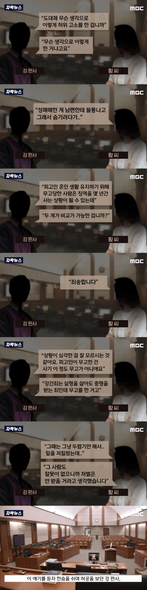

무고를 얼마나 ㅈ으로 보면 저럴까
무고죄 처벌할 때 고소했던 죄목으로 똑같이 적용시키는게 맞다

무고를 얼마나 ㅈ으로 보면 저럴까
무고죄 처벌할 때 고소했던 죄목으로 똑같이 적용시키는게 맞다
뭔 양심껏이야 무죄증거 나오니까 저런거지 절대 양심에 찔려서 자백한거 아니다
ㅋㅋ독하고나발이고 상관없구요
판사가저래말할정도면 이미증거빼박이란소리임
뭔 병신 소리냐
양심이 있었으면 없는 죄를 만들어 씌우겠냐? 말이 되는 소리를 해라
무고는 사실 좃이긴 함
무고죄가 누명을 씌워서 상대방에거 손해를 입한 것에 죄가 아니라 사법 행정력을 낭비시킨 죄임
애초에 무고죄로는 중형이 나올 수가 없음
그 관점바뀌어야한다봄.. 상대방피해도합해서 판결해야뿌리뽑힐듯
나도 당연히 저렇고 무고하는 새!끼들은 단단히 엿을 먹여야 한다는 생각이지만
현행 사법 구조에서는 개붕이가 말하는 것은 시대에 맞지 않는 의견임
간통죄도 민사소송의 영역으로 봐서 형법에서 폐지하는 트렌드상 '나를 엿먹인 죄'는 형법의 대상이 되기는 어려움.
이미 우리 민법에서는 '불법행위로 인한 손해를 끼쳤을 때'라고 손해배상 소송의 정의를 명시했기 때문에 우리 법 감정상 무고에 대해서는 민사소송으로 제재하는 것이 타당한 논리임
형법을 새로 만들기 보다는 악의적인 불법행위에 대해서는 징벌적 손해배상을 폭넓게 인정하는 쪽으로 가는 것이 현 시대 흐름에서는 적절함
ㅇㅈ 화딱지는 나지만 법은 감정과 분리해서 봐야지
손해배상쪽으로 방향을 잡으면 괜찮긴하겠다
애초에 무고 는 형사죄야. 손해배상 은 형사 판결 이후 민사로 별도로 진행해야함
그거 국가배상범위 확대하면 무고죄도 따라서 올라가게 돼있음ㅋㅋ 시대흐름이고 자시고 걍 안하고 있는 거 맞음. 왜? 표가 안되니까 ㅋㅋ
노리스크인데 뭘 심각한걸 몰라 ㅋㅋ
본인한텐 별로 심각하지 않은거 제대로 알고있구만 ㅋㅋ
판사는 한숨쉴게 아니라 무고죄에 걸맞게 형량을 때려야지
최대 10년형이라매 눈눈이이까지 안가더래도
납득이 가는 판결을 해야지
한숨쉬고 훈계했도르 해봐야 나온 결과가
집유 2년인데?
양형기준이란게 있음
일단 무고죄가 피해자 기준이 아니라 경검법원 똥개훈랸시켰다고 조지는 죄라
무고 해봐야. 벌금끝
막짤 모니터는뭐야 시발ㅋㅋㅋㅋㅋㅋㅋㅋ
봤구나봤구나봤구나봤구나봤구나봤구나봤구나봤구나봤구나봤구나봤구나봤구나봤구나봤구나봤구나봤구나봤구나봤구나봤구나봤구나봤구나봤구나봤구나봤구나봤구나봤구나
무고죄는 피고가 받은 형량기준으로 고의 유무에따라 점점 플러스되게 바꿀순없나???
그걸 반좌율이라고 하는데 현행법에선 국보법에만 적용하고있음.
위에도 어떤분이 적어줬지만
무고는 개인적법익이 아닌 국가적법익으로 분류되고, 주된 보호법익은 국가의 행정력, 국가의 심판기능임
허위로 누구인생을 조질려는 행위를 벌하고 개인을 지켜주려고 만들어진 법이 아님.
댓글 결론 내자면 바꿀수는 있음.
즉, 무고죄의 피해자는 '국가' 임
실제로 무고한 원 사건의 피해자를 위한법이 아님
말은 저렇게 하고 판결은...
판사도 그래서 현타오는게 아닐까
다 스윗영피프티 판사만 있는건
아닐태니까 판결에는 한계가있고
그럼 무고로 어케 중형을 때림?
무고죄는 법 바꾸긴 해야됨
특히 성범죄쪽 무고는 본인이 명백히 당하지 않은걸 알수 있는 상태에서 고소하는게 있잖아
그런건 걍 죄다 무고죄 고소 당한 피해자가 유죄 확정났을때 받을수 있는 최고 형량 때려야됨
개 좆같은 소리하네 처벌 안 받기는 시발년이
시작부터 개스트레스인데
그냥 자기 쫄린다고 아무나 잡고 고소를 하면 그대로 해주니까 문제 아닐까 싶네
노 리스크
하이 리턴
대명률에 의거하고 강간죄는 사형이니 무고도 응당 사형으로 댕겅하지 않나?
어쩌겠어 법을 ㅈ 같이 만들어서 저렇게 된건대.
태형이 필요하다
판결 좆같이 한거 보면 우리는 항상 판사욕 판사애미애비 욕을 하곤 하는데.. 실상은 법을 만드는 놈들의 애미가 뒤진게 아닐까 생각해 보게되네
국회의원들 어미 뒤졌나
ㄹㅇ 무고는 무고하려고 했던 죄 + 가중해서 처벌해야함
무고에따른 형량만큼 되돌려받는게 맞아보이는디
무고죄는 피해자가 아닌 법정에 대한 피해를 방지하려는 목적이라 형벌이 약함
조선시대때는 무고죄는 해당 죄목과 똑같이 처벌하는걸 알고있는데
무고는 진짜 그 죄 고대로 다시 줘야함
법쟁이들도 지가 다루는 법이라는게 좆병신같으니 저런일도 당연히 생긴다는걸 뻔히 알텐데 현타오지않을까?
무고죄는 똑같이 적용되게 해야함
이걸 반대하는 사람은 무고하려는 사람밖에 없을듯
무고는 진짜 만약 무고 때문에 죄가 인정됐을 경우와 똑같은 처벌을 무고자에게 내려야 한다. 그래야 안하지 씨발. 그래도 멍청한 년들은 하겠지만
맞아 케삭빵 마냥 어디 하나 지면 날아갈 각오 하고 해야지... 지금처럼 아님말고ㅋ 이건 너무 리스크 없는 운빨 테스트샷 느낌이야
내가 무고로 신고해서 실패해봤자 꼴랑 판사한테 몇마디 꾸중듣는게 전부인데 안할 이유가?
페미니스트:성범죄는 너무 중대한 사항이라 여자가 무고를 할 리가 없다!! 성범죄 무고 사례는 매우 적다!!
“무고로 밝혀지는 강간 신고는 전체 강간 건수 대비 2%에 불과하니까 강간에 대해서는 여자 말을 전적으로 믿어야 한다” (실제로 한 말)
시발년들 쇠막대 달궈서 보지에 쑤셔넣어야됨
무고 처벌 ㅈ같음?
왜 존나 일단 싸고보는거냐
미래에 처벌이 있어도 당장의 위기를 모면해야 하니까
애초에 무고죄 이름을 바꿔야됨 법정모독죄 인생파탄죄
강간 무고의 흔한 동기가 바람 핀 거 들켜서임ㅋㅋㅋㅋ
판사가 잡도리하고 한숨쉬고 허공 쳐다본다 = 집행유예
저 아줌마가 양심껏 얘기하는거에 감사해라 진짜 독한년이었으면 그냥 깜빵엔딩임